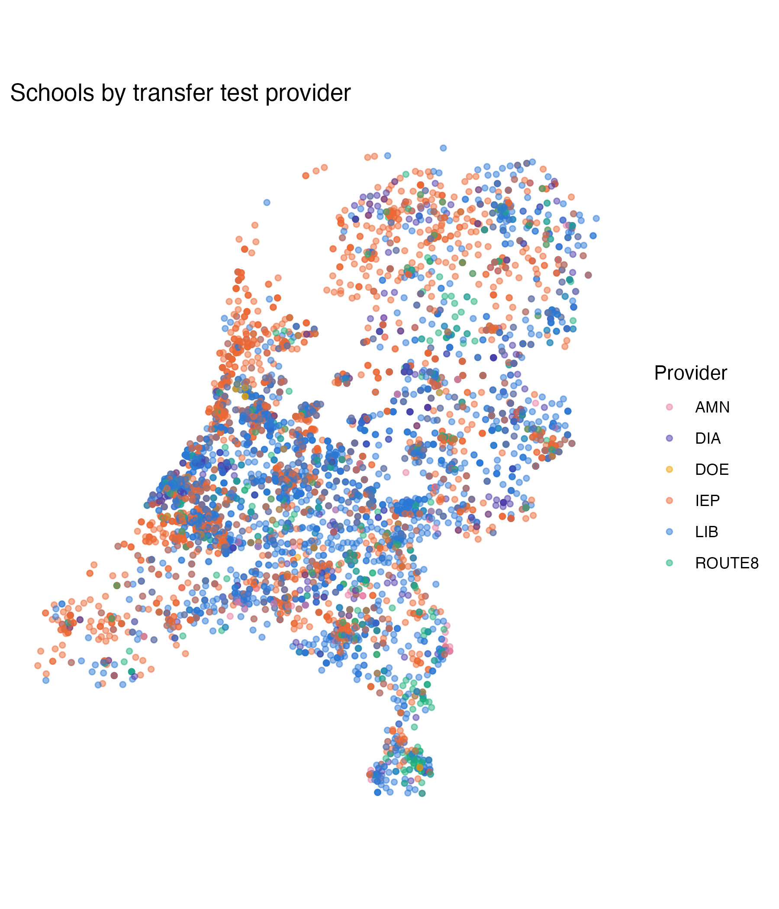

library(tidyverse)
library(plotly) # turns a ggplot into an interactive widgetBuild an interactive viz with ggplotly
This handout shows a way to use ggplotly() to build an interactive map: one point per school, colored by which transfer test provider it used, and a hover tooltip. Here, the ggplotly() mechanics are applied to coordinates. In assignment 1, you’ll apply it to simple x/y points on a scatter plot.
Getting the data
You already have eindscores if you’ve done the ggplot recap worksheet - see its Setup section for data/get-data.R. For this map we need one more thing DUO doesn’t give us directly: coordinates. eindscores only has each school’s postcode (POSTCODE_VESTIGING), not a latitude/longitude.
We’ll use 4PP (MIT licensed), an open lookup table of the centroid coordinates for every Dutch 4-digit postcode area. Download it once:
download.file(
"https://raw.githubusercontent.com/bobdenotter/4pp/master/4pp.csv",
destfile = "data/raw/postcodes_pc4.csv", # where to save it locally, alongside the other course data
mode = "wb" # "write binary" - avoids a corrupted file on Windows
)Prepare the data
Same school_provider shape as the ggplot recap worksheet, but this time we keep POSTCODE_VESTIGING around so we have something to join the coordinates on. DUO’s postcodes are 6 characters (e.g. "2716PH"); the coordinate lookup only goes down to the first 4 digits (a postcode area, not an exact address) - close enough to place a school on a map of the whole country.
eindscores <- read_delim(
"data/raw/eindscores_2024-2025.csv",
delim = ";", # DUO's files are ;-separated, not comma-separated
locale = locale(decimal_mark = ",", encoding = "UTF-8"), # NL uses , as the decimal point
show_col_types = FALSE
)
postcodes <- read_csv("data/raw/postcodes_pc4.csv", show_col_types = FALSE) |>
distinct(postcode, .keep_all = TRUE) |> # a few postcodes appear more than once in this file - keep just one row per postcode
select(postcode, latitude, longitude) # we only need these three columns for the join below
school_provider <- eindscores |>
# keep just the school identifiers/labels, the postcode, and the six
# *_AANTAL columns (number of pupils tested, per provider)
select(INSTELLINGSCODE, VESTIGINGSCODE, INSTELLINGSNAAM_VESTIGING,
GEMEENTENAAM, PROVINCIE, POSTCODE_VESTIGING, ends_with("_AANTAL")) |>
# stack the six AANTAL columns into two: which provider, how many pupils -
# turns "one row per school, six provider columns" into "one row per
# (school, provider), with n_pupils telling us how many pupils it tested"
pivot_longer(cols = ends_with("_AANTAL"), names_to = "provider", values_to = "n_pupils") |>
mutate(
provider = sub("_AANTAL$", "", provider), # "IEP_AANTAL" -> "IEP"
n_pupils = as.numeric(n_pupils), # DUO writes "<5" for small counts -> this becomes NA
postcode = as.numeric(str_sub(POSTCODE_VESTIGING, 1, 4)) # keep only the numeric part: "2716PH" -> 2716
) |>
filter(!is.na(n_pupils), n_pupils > 0) |> # drop the providers a school didn't actually use
group_by(INSTELLINGSCODE, VESTIGINGSCODE) |> # group the rows back up by school...
slice_max(n_pupils, n = 1, with_ties = FALSE) |> # ...and keep only its single largest provider (most schools use just one anyway)
ungroup()
# join the coordinates onto each school by matching postcode -> postcode.
# inner_join() only keeps rows that find a match in BOTH tables, so a
# school whose postcode isn't in the lookup table gets dropped here - in
# practice this matches ~99.9% of schools, so barely any are lost
school_map <- school_provider |>
inner_join(postcodes, by = "postcode")Build the plot
Here, we make a very simple map visualization with points. To do this, we use coord_fixed() with a latitude correction. Real map projections usually use polygon boundaries (country/province outlines); to make these more complex map visualizations, coord_map() or geom_sf() can be used. However ggplotly()‘s support for geom_sf() is known to be inconsistent (tooltips and rendering can break). Here, coord_fixed() gets us a correctly-proportioned map with none of that risk. The ratio below (1 / cos(latitude)) corrects for the Netherlands’ latitude, so the country doesn’t look horizontally stretched.
Feel free to explore more complex map visualizations on your own, with more complex interactive viz tools such as leaflet (the standard for interactive maps in R - real basemaps, polygons, markers, popups) or plotly’s own native mapping functions (plot_ly(type = "choroplethmapbox"), plot_geo()).
provider_colors <- c(
LIB = "#2a78d6", IEP = "#eb6834", ROUTE8 = "#1baf7a",
DIA = "#4a3aa7", AMN = "#e87ba4", DOE = "#eda100"
)
nl_map <- ggplot(school_map, aes(x = longitude, y = latitude, color = provider)) +
geom_point(alpha = 0.5, size = 1.2) + # alpha < 1 so overlapping points show up as darker patches
scale_color_manual(values = provider_colors) +
coord_fixed(ratio = 1 / cos(52.1 * pi / 180)) + # keep the map's proportions correct - NL sits at ~52.1°N
labs(title = "Schools by transfer test provider", color = "Provider", x = NULL, y = NULL) +
theme_minimal() +
theme(
axis.text = element_blank(), # hide the lat/long numbers - not meaningful to a reader
axis.ticks = element_blank(),
panel.grid = element_blank() # hide gridlines
)
nl_map
Make it interactive
Same pattern as the other ggplotly() example: add a text aesthetic with whatever you want the tooltip to show, then wrap the plot in ggplotly(..., tooltip = "text").
nl_map_interactive <- ggplot(
school_map,
aes(
x = longitude, y = latitude, color = provider,
# build the tooltip text ourselves, one string per row - this is what
# shows up when someone hovers over a point. <b> and <br> are HTML tags
# plotly understands, for bold text and line breaks
text = paste0(
"<b>", INSTELLINGSNAAM_VESTIGING, "</b>",
"<br>", GEMEENTENAAM, ", ", PROVINCIE,
"<br>Provider: ", provider,
"<br>Pupils tested: ", n_pupils
)
)
) +
geom_point(alpha = 0.5, size = 1.2) +
scale_color_manual(values = provider_colors) +
coord_fixed(ratio = 1 / cos(52.1 * pi / 180)) +
labs(title = "Schools by transfer test provider", color = "Provider", x = NULL, y = NULL) +
theme_minimal() +
theme(axis.text = element_blank(), axis.ticks = element_blank(), panel.grid = element_blank())
# convert the static ggplot into an interactive plotly widget;
# tooltip = "text" shows our custom text column on hover
ggplotly(nl_map_interactive, tooltip = "text")Zoom, pan, and hover over a few points - notice how the providers cluster regionally rather than being scattered evenly across the country.